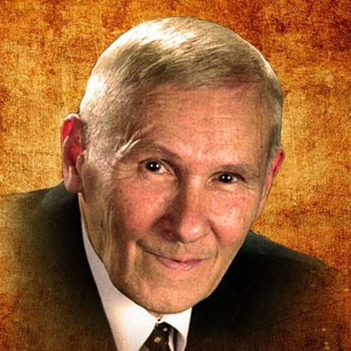

Готовим короткое видео о курсе
Ольга Соколова
Врач-гастроэнтеролог
«Помогу разобраться, что происходит с пищеварением и какие вопросы стоит обсудить с врачом.»
Врач говорит «ничего страшного», таблетка помогает на время, советы из интернета противоречат друг другу.
Поймёте свою реакцию на продукты и сможете составлять рацион без отказа от всего подряд.
Разберётесь, какой размер порций и режим питания подходят вам, чтобы тяжесть и вздутие беспокоили реже.
Узнаете, как время ужина и вечерние привычки связаны с изжогой и что можно изменить в своём режиме.
Разберётесь, как питание, питьевой режим и движение влияют на работу кишечника.
Получите меню на неделю и список покупок, чтобы меньше времени тратить на выбор блюд.
Выберете подходящие вам привычки и будете знать, как соблюдать их дома, в поездках и на праздниках.
Для первого потока собираем небольшую группу. Будем встречаться на живых эфирах, чтобы обсудить то, что важно именно вам.

Борис Васильевич Болотов — учёный и изобретатель, кандидат наук, работал в Киевском институте электродинамики. Больше 40 лет он изучал, как питание и образ жизни влияют на здоровье, и написал об этом десятки книг — среди них «Здоровье человека в нездоровом мире» и «Я научу вас не болеть и не стареть». В 1990 году получил звание «народный академик».
В основе курса — питание и ежедневные привычки. Врачи объяснят, какие подходы системы можно обсуждать в образовательном формате и в каких ситуациях нужна личная консультация.
Два врача и консультант по ЗОЖ — у каждого своя часть программы и общая цель: помочь вам разобраться в повседневных привычках.
«Помогу разобраться, что происходит с пищеварением и какие вопросы стоит обсудить с врачом.»
«Объясню, как сон, стресс и обмен веществ связаны с вашим самочувствием.»
«Покажу, как превратить рекомендации в удобное меню и привычки на каждый день.»
Раскройте неделю, чтобы посмотреть темы занятий, практику и материалы.
Начнёте дневник, соберёте свою первую тарелку и выберете одну привычку для наблюдения.
Шаблон дневника, ориентиры для составления тарелки и список вопросов к специалистам.
Знакомство с экспертами и ответы на вопросы о начале курса.
Сопоставите записи о самочувствии с повседневными привычками и начнёте подбирать удобное меню.
Примеры меню, список покупок и памятка по наблюдению за своими реакциями.
Разбор вопросов по двум темам потока и первых наблюдений участников.
Составите меню под свой распорядок, попробуете простые заготовки и скорректируете выбранные привычки.
Примеры блюд, план заготовок и личный список удобных привычек.
Вопросы о практике и разбор ситуаций участников с их согласия.
Соберёте личный план питания и привычек, сравните наблюдения в начале и конце курса.
Итоговый лист наблюдений и план дальнейших действий.
Обсуждение итогов и ответы на вопросы о жизни после курса.
Даты и время встреч сообщим до оплаты. Подробности программы могут уточняться с учётом вопросов группы.
Получите приглашение с датой старта, расписанием и стоимостью. Посмотрите условия и решите, участвовать ли.
Хочу на курсБез оплаты сейчас и обязательства покупать курс.Ответьте на несколько вопросов о самочувствии. По вашим ответам покажем, на какие темы стоит обратить внимание: питание, режим или повседневные привычки. Затем можно записаться в список ожидания курса.
Пройти тест о самочувствииТест помогает сориентироваться в программе и не ставит диагноз.Первый поток проходит в живом формате: встречи с экспертами, вопросы и практика между эфирами. Заранее записанных уроков сейчас нет.
После короткого теста можно подтвердить предзапись и получить сообщение о начале набора. Оплачивать сейчас ничего не нужно. Предзапись не равна покупке курса или гарантированной брони места.
Дату, расписание и стоимость сообщим в боте до оплаты. Первый поток планируем небольшим — точное число мест объявим вместе с условиями.
Да, на еженедельных живых встречах можно будет задать вопросы по теме курса. Ситуации участников разбираем с их согласия, в образовательном формате.
График сообщим до оплаты, чтобы вы могли оценить, удобно ли вам участвовать. Возможность просмотра записей и срок доступа уточним при открытии набора.
Нет. Курс посвящён питанию и повседневным привычкам. Вопросы диагностики, лечения и назначенных лекарств нужно обсуждать со своим лечащим врачом.
Пришлём расписание и стоимость — вы решите, подходит ли вам курс.
Хочу на курс